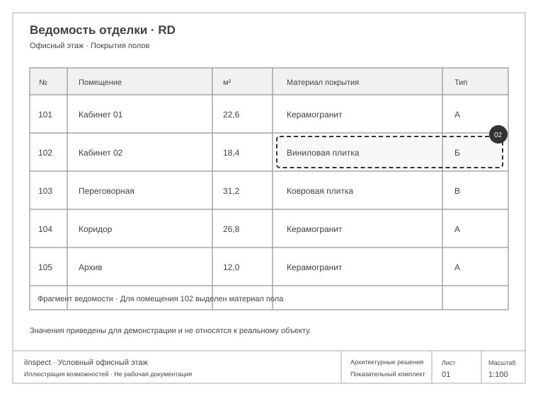

Комплект под рукой
Работайте с документами и их редакциями в едином пространстве.
Для тех, кто проверяет строительную документацию
iInspect помогает сопоставлять документы, находить возможные расхождения и проверять их по первоисточникам. Всё необходимое для решения — рядом.
Архитектурные решения
В рабочем и исполнительном планах проём расположен иначе, чем в проектном. Инспектор проверяет, согласовано ли изменение.
Примеры с условными документами и значениями. Иллюстрация возможностей продукта.
Документы рядом
Источник каждого замечания
Решение за специалистом
Возможности
Документы, замечания и результаты собраны в одном месте — чтобы было проще разобраться в деталях.
Работайте с документами и их редакциями в едином пространстве.
Рассматривайте тексты и чертежи разных стадий рядом, приближайте важные детали.
Переходите от возможного расхождения к документу, на котором оно основано.
Подтверждайте, отклоняйте или уточняйте замечания с собственным обоснованием.
Возвращайтесь к принятым решениям и прослеживайте ход работы над замечаниями.
Собирайте итоги проверки и передавайте их коллегам в удобном виде.
Примеры в деталях
Сравните чертежи, проверьте материал по источнику и посмотрите, как выглядит результат рассмотрения.
Тяните шторку прямо по чертежу: на проектном плане проём находится слева, на рабочем — справа. Выделенная область помогает быстро увидеть изменение.
Условный пример · Архитектурные решенияВ проектной ведомости для кабинета 102 указан керамогранит, в рабочей — виниловая плитка. Специалист видит конкретную строку и проверяет основание замены.
Условный пример · Ведомость отделки
Рассмотреть первоисточникУзел крепления есть в ПД и РД. Подтверждающий документ в комплекте ИД не приложен. Инспектор фиксирует запрос уточнения с привязкой к источникам.
Отсутствие документа не доказывает нарушение.Запросить документ, подтверждающий выполнение узла. После получения — вернуться к рассмотрению.
Рабочий процесс
iInspect помогает пройти проверку последовательно и сохранить её итоги.
Добавьте материалы проекта, с которыми предстоит работать.
Посмотрите возможные расхождения и откройте их источники.
Примите решения и сформируйте протокол проверки.
Профессиональное решение
ИИ помогает заметить возможные расхождения. Инспектор проверяет источники, оценивает контекст и принимает итоговое решение.
Внедрение
Обсудим задачи команды, состав документов и удобный формат знакомства с продуктом.
Обсудить задачуДля работы с проектной, рабочей и исполнительной строительной документацией: текстами, сканами и чертежами.
Специалист. Он рассматривает предложенное замечание, проверяет первоисточники и сохраняет решение с обоснованием.
Формат демонстрации и комплект документов для знакомства согласуются при обсуждении вашего проекта.
Свяжитесь с автором и расскажите о задаче. Сценарии использования, условия внедрения и сопровождения обсудим вместе.
Обсудим вашу задачу
Расскажите о документах и задачах команды — подберём формат знакомства с iInspect.